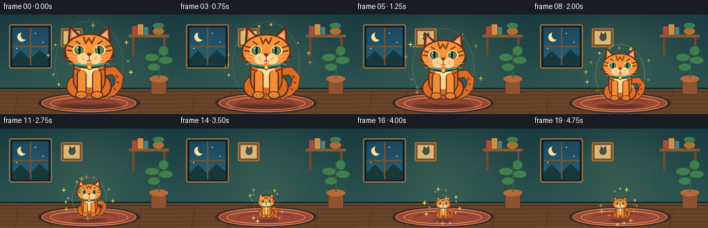
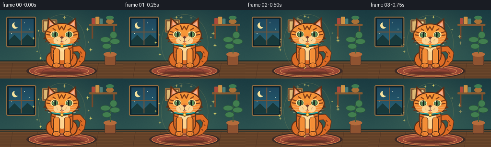
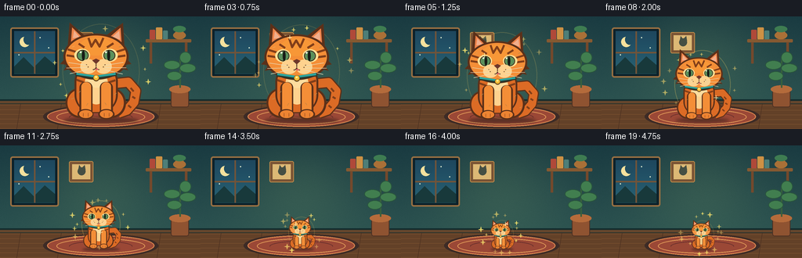
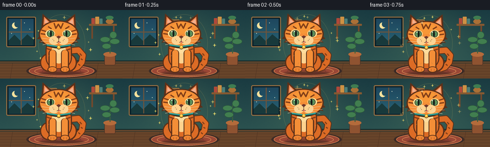

CODING AGENTS AS PIXEL WORLD MODELS
traex/GPT-5.6-Sol · instance_preservation_0049
点击播放 · 原生 RGB 像素
逐轮保存的候选
回放视频、检查图与代码变化。
每份候选均可单独播放。实际图片检查记录在下方工具轨迹中。
候选 01播放与检查图
点击播放 · 原生 RGB 像素


展开代码变化
--- 上一保存版本
+++ 本次保存版本
@@ -0,0 +1,272 @@
+from pathlib import Path
+import math
+import numpy as np
+from PIL import Image, ImageDraw, ImageFilter
+import artifact_io
+
+CASE_DIR = Path(__file__).resolve().parent
+W, H, N = 256, 144, 20
+SS = 3
+rng = np.random.default_rng(4901)
+
+
+def sc(v):
+ if isinstance(v, (tuple, list)):
+ return tuple(int(round(x * SS)) for x in v)
+ return int(round(v * SS))
+
+
+def make_background():
+ """A fixed cozy room gives strong, unchanging size references."""
+ h, w = H * SS, W * SS
+ yy, xx = np.mgrid[0:h, 0:w]
+ # Deep teal wall with a warm pool of light in the center.
+ base_top = np.array([25, 58, 65], dtype=float)
+ base_bottom = np.array([43, 82, 80], dtype=float)
+ t = np.clip(yy / (112 * SS), 0, 1)[..., None]
+ arr = base_top * (1-t) + base_bottom * t
+ glow = np.exp(-(((xx-w*.5)/(w*.43))**2 + ((yy-h*.38)/(h*.68))**2) * 2.0)[..., None]
+ arr += glow * np.array([18, 18, 7])
+ # Quiet wallpaper grain to avoid a sterile vector look.
+ grain = rng.normal(0, 1.25, (h, w, 1))
+ arr += grain
+ arr = np.clip(arr, 0, 255).astype(np.uint8)
+ im = Image.fromarray(arr, 'RGB')
+ d = ImageDraw.Draw(im)
+
+ # Wall trim and floor.
+ d.rectangle((0, sc(106), sc(256), sc(112)), fill=(18, 43, 45))
+ d.rectangle((0, sc(108), sc(256), sc(111)), fill=(99, 70, 45))
+ d.rectangle((0, sc(112), sc(256), sc(144)), fill=(99, 65, 40))
+ for y in range(113, 145, 6):
+ d.line((0, sc(y), sc(256), sc(y+1)), fill=(119, 79, 47), width=sc(1))
+ for x in (26, 78, 142, 205):
+ d.line((sc(x), sc(112), sc(x-5), sc(144)), fill=(76, 49, 33), width=sc(.6))
+ # Window with a cool twilight view.
+ d.rounded_rectangle(sc((13, 14, 75, 78)), radius=sc(3), fill=(12, 33, 42), outline=(151, 111, 66), width=sc(2))
+ d.rectangle(sc((18, 19, 70, 73)), fill=(30, 72, 91))
+ for y in range(19, 74):
+ frac = (y-19)/55
+ col = (int(30+10*frac), int(71+28*frac), int(94+22*frac))
+ d.line(sc((18, y, 70, y)), fill=col, width=sc(1))
+ # moon, stars, distant hills
+ d.ellipse(sc((25, 26, 38, 39)), fill=(246, 225, 157))
+ d.ellipse(sc((30, 23, 41, 36)), fill=(32, 76, 96))
+ for x,y in [(51,27),(62,40),(44,47),(24,49),(58,57)]:
+ d.ellipse(sc((x-0.8,y-0.8,x+0.8,y+0.8)), fill=(225,237,210))
+ d.polygon([sc((18,64)),sc((30,52)),sc((43,65)),sc((57,51)),sc((70,62)),sc((70,73)),sc((18,73))], fill=(24,57,59))
+ d.line(sc((44,19,44,73)), fill=(113,84,57), width=sc(2))
+ d.line(sc((18,46,70,46)), fill=(113,84,57), width=sc(2))
+ # Tiny framed cat silhouette on wall, a playful visual motif.
+ d.rounded_rectangle(sc((88, 20, 119, 47)), radius=sc(2), fill=(122,84,52), outline=(189,139,74), width=sc(1))
+ d.rectangle(sc((92,24,115,43)), fill=(220,184,117))
+ d.ellipse(sc((99,28,109,38)), fill=(69,79,67))
+ d.polygon([sc((100,30)),sc((101,25)),sc((104,29)),sc((108,25)),sc((109,31))], fill=(69,79,67))
+ # Shelf and fixed objects to the right.
+ d.rounded_rectangle(sc((186, 29, 244, 33)), radius=sc(1), fill=(133,89,49))
+ d.rectangle(sc((191,33,194,60)), fill=(116,73,44))
+ d.rectangle(sc((236,33,239,60)), fill=(116,73,44))
+ books = [((191,17,198,29),(176,73,57)),((199,14,207,29),(206,145,68)),((208,18,214,29),(78,126,119))]
+ for box,col in books:
+ d.rounded_rectangle(sc(box), radius=sc(1), fill=col)
+ d.ellipse(sc((221,19,237,29)), fill=(169,112,55))
+ d.rectangle(sc((224,15,234,25)), fill=(170,112,55))
+ d.ellipse(sc((221,12,237,20)), fill=(62,124,81))
+ # tall plant anchored on floor
+ d.rounded_rectangle(sc((218,91,241,116)), radius=sc(3), fill=(143,83,49), outline=(76,48,35), width=sc(1))
+ d.ellipse(sc((216,88,243,98)), fill=(180,107,59))
+ d.line(sc((230,91,230,54)), fill=(57,96,61), width=sc(2))
+ for box in [(209,56,230,68),(229,60,250,72),(213,70,232,82),(229,45,244,60)]:
+ d.ellipse(sc(box), fill=(65,126,79), outline=(41,85,61), width=sc(1))
+ # Warm oval rug and stitched rings, crucial scale cue under the cat.
+ d.ellipse(sc((55,113,202,143)), fill=(61,43,38))
+ d.ellipse(sc((60,115,197,141)), fill=(155,72,54), outline=(215,132,78), width=sc(1.2))
+ d.ellipse(sc((72,119,185,138)), outline=(229,159,91), width=sc(1))
+ d.arc(sc((88,122,169,136)), 180, 360, fill=(105,47,45), width=sc(1))
+ return im
+
+
+def make_cat_sprite():
+ """Render one detailed orange tabby, reused exactly in all 20 frames."""
+ C = 4
+ cw, ch = 360*C, 420*C
+ im = Image.new('RGBA', (cw, ch), (0,0,0,0))
+ d = ImageDraw.Draw(im)
+ def q(coords): return tuple(int(round(v*C)) for v in coords)
+ def line(points, fill, width): d.line([q(p) for p in points], fill=fill, width=int(width*C), joint='curve')
+ outline=(91,48,25,255)
+ dark=(129,62,25,255)
+ orange=(220,107,37,255)
+ light=(244,142,55,255)
+ cream=(255,210,142,255)
+
+ # Tail behind body: a broad curled hook, dark outline then orange core.
+ tail_pts=[(238,253),(298,247),(326,279),(319,321),(293,351),(262,362)]
+ line(tail_pts, outline, 42)
+ line(tail_pts, orange, 33)
+ line([(307,268),(318,281)], dark, 7)
+ line([(313,300),(324,307)], dark, 7)
+ line([(298,332),(309,341)], dark, 7)
+ # Rear silhouette / haunches.
+ d.ellipse(q((68,268,172,379)), fill=outline)
+ d.ellipse(q((188,268,290,379)), fill=outline)
+ d.ellipse(q((75,274,170,372)), fill=orange)
+ d.ellipse(q((190,274,282,372)), fill=orange)
+ # Main body.
+ d.rounded_rectangle(q((101,176,260,361)), radius=68*C, fill=outline)
+ d.rounded_rectangle(q((108,182,253,357)), radius=62*C, fill=orange)
+ # soft central chest bib
+ d.ellipse(q((138,191,224,329)), fill=cream)
+ d.ellipse(q((147,187,217,268)), fill=(255,220,157,255))
+ # Body tabby markings.
+ for pts in [[(113,214),(136,226)],[(108,238),(134,247)],[(247,215),(226,227)],[(251,240),(227,248)]]:
+ line(pts, dark, 8)
+ line([(177,183),(177,216)], dark, 8)
+ line([(160,187),(166,214)], dark, 6)
+ line([(194,188),(187,214)], dark, 6)
+ # Straight front legs and paws.
+ d.rounded_rectangle(q((119,246,167,371)), radius=21*C, fill=outline)
+ d.rounded_rectangle(q((126,247,162,367)), radius=17*C, fill=light)
+ d.rounded_rectangle(q((194,246,242,371)), radius=21*C, fill=outline)
+ d.rounded_rectangle(q((199,247,235,367)), radius=17*C, fill=light)
+ d.ellipse(q((112,346,171,385)), fill=outline)
+ d.ellipse(q((118,350,167,379)), fill=(237,132,50,255))
+ d.ellipse(q((188,346,248,385)), fill=outline)
+ d.ellipse(q((194,350,242,379)), fill=(237,132,50,255))
+ for x in (133,151,210,228):
+ line([(x,361),(x,374)], (157,77,31,255), 2)
+ # Ears behind head.
+ d.polygon([q((76,115)),q((83,27)),q((147,83))], fill=outline)
+ d.polygon([q((213,78)),q((279,28)),q((285,123))], fill=outline)
+ d.polygon([q((88,98)),q((92,45)),q((130,82))], fill=(238,131,74,255))
+ d.polygon([q((230,81)),q((270,46)),q((274,102))], fill=(238,131,74,255))
+ d.polygon([q((95,85)),q((99,57)),q((120,81))], fill=(242,174,139,255))
+ d.polygon([q((240,80)),q((265,58)),q((268,90))], fill=(242,174,139,255))
+ # Round head with side cheek tufts.
+ d.ellipse(q((60,68,300,238)), fill=outline)
+ d.polygon([q((69,157)),q((48,180)),q((75,183)),q((61,204)),q((98,196))], fill=outline)
+ d.polygon([q((289,157)),q((310,180)),q((284,184)),q((299,204)),q((263,195))], fill=outline)
+ d.ellipse(q((68,75,292,230)), fill=light)
+ # forehead golden highlight and tabby M
+ d.ellipse(q((120,82,240,149)), fill=(247,151,55,255))
+ line([(152,84),(163,116),(178,91),(193,116),(207,84)], dark, 8)
+ line([(116,105),(137,119)], dark, 8)
+ line([(244,104),(220,119)], dark, 8)
+ # Side stripes.
+ for pts in [[(76,126),(108,136)],[(72,148),(106,153)],[(285,126),(253,136)],[(288,149),(254,154)]]:
+ line(pts, dark, 8)
+ # Eye patches, eyes, pupils, catchlights.
+ d.ellipse(q((100,124,158,172)), fill=(255,226,151,255))
+ d.ellipse(q((202,124,260,172)), fill=(255,226,151,255))
+ d.ellipse(q((109,128,153,169)), fill=(91,144,91,255), outline=(63,43,28,255), width=3*C)
+ d.ellipse(q((207,128,251,169)), fill=(91,144,91,255), outline=(63,43,28,255), width=3*C)
+ d.ellipse(q((128,130,139,168)), fill=(24,28,23,255))
+ d.ellipse(q((221,130,232,168)), fill=(24,28,23,255))
+ d.ellipse(q((120,133,127,140)), fill=(255,255,229,255))
+ d.ellipse(q((213,133,220,140)), fill=(255,255,229,255))
+ # Muzzle and friendly expression.
+ d.ellipse(q((122,162,182,216)), fill=cream)
+ d.ellipse(q((177,162,238,216)), fill=cream)
+ d.polygon([q((166,167)),q((180,160)),q((194,167)),q((180,180))], fill=(110,55,42,255))
+ line([(180,178),(180,190)], (84,47,34,255), 3)
+ d.arc(q((159,179,181,202)), 5, 100, fill=(84,47,34,255), width=3*C)
+ d.arc(q((179,179,202,202)), 80, 175, fill=(84,47,34,255), width=3*C)
+ d.ellipse(q((178,196,188,203)), fill=(218,99,98,255))
+ # Whisker dots and sweeping whiskers.
+ for x,y in [(145,183),(151,191),(213,183),(207,191)]: d.ellipse(q((x-2,y-2,x+2,y+2)), fill=(119,73,43,255))
+ whisk=(240,228,192,245)
+ for pts in [[(147,185),(79,175)],[(147,193),(71,195)],[(149,201),(84,216)],[(213,185),(281,174)],[(213,193),(291,194)],[(211,201),(278,217)]]:
+ line(pts, whisk, 2)
+ # A turquoise collar and bell is a strong persistent identity feature.
+ line([(105,218),(180,231),(255,217)], (41,56,45,255), 13)
+ line([(108,216),(180,226),(252,216)], (44,164,158,255), 8)
+ d.ellipse(q((169,220,192,244)), fill=(98,62,25,255))
+ d.ellipse(q((171,221,190,240)), fill=(245,190,55,255))
+ d.ellipse(q((176,225,184,231)), fill=(255,240,153,255))
+ # Sparse short fur marks add handcrafted richness without altering silhouette.
+ marks=[(91,118,101,114),(264,118,274,113),(114,287,123,280),(247,294,255,287),(89,309,100,305),(270,337,278,331),(145,333,151,324),(218,331,212,322)]
+ for x1,y1,x2,y2 in marks:
+ line([(x1,y1),(x2,y2)], (247,161,74,180), 2)
+ # Downsample from 4x for a clean canonical sprite, tightly preserving alpha.
+ im = im.resize((360,420), Image.Resampling.LANCZOS)
+ return im
+
+
+def ease01(x):
+ x = max(0.0, min(1.0, x))
+ return x*x*(3-2*x)
+
+
+def draw_glow_and_magic(frame, i, center_x, bottom_y, cat_h, progress):
+ """Subtle inward-falling motes make the transformation read as intentional."""
+ layer = Image.new('RGBA', frame.size, (0,0,0,0))
+ d = ImageDraw.Draw(layer)
+ # Halo tracks the actual subject size and fades after shrinking.
+ alpha = int(34 + 35*math.sin(math.pi*progress))
+ rx = max(11, cat_h*.39) * SS
+ ry = max(12, cat_h*.48) * SS
+ cx, cy = center_x*SS, (bottom_y-cat_h*.50)*SS
+ d.ellipse((cx-rx,cy-ry,cx+rx,cy+ry), outline=(255,211,94,alpha), width=max(1,sc(1.1)))
+ # Deterministic motes orbit, converging as the cat shrinks.
+ for j in range(13):
+ ang = j*2.399 + i*.20*(1 if j%2 else -1)
+ radius_x = (56*(1-progress)+20*progress) + (j%3)*4
+ radius_y = (48*(1-progress)+20*progress) + (j%4)*2
+ px = center_x + math.cos(ang)*radius_x
+ py = (bottom_y-cat_h*.52) + math.sin(ang)*radius_y
+ pulse = .55 + .45*math.sin(i*.8+j*1.7)
+ r = (1.0 + (j%3)*.42)*SS
+ col=(255,211+int(25*pulse),110,int(95+120*pulse))
+ # four-point spark
+ d.polygon([(px*SS,(py*SS-r*2)),(px*SS+r*.45,py*SS-r*.45),(px*SS+r*2,py*SS),(px*SS+r*.45,py*SS+r*.45),(px*SS,py*SS+r*2),(px*SS-r*.45,py*SS+r*.45),(px*SS-r*2,py*SS),(px*SS-r*.45,py*SS-r*.45)], fill=col)
+ layer = layer.filter(ImageFilter.GaussianBlur(sc(.15)))
+ frame.alpha_composite(layer)
+
+
+def generate_frames():
+ bg = make_background().convert('RGBA')
+ cat = make_cat_sprite()
+ frames=[]
+ for i in range(N):
+ # Hold big for 0.5 s, transform smoothly, hold tiny for final 0.75 s.
+ raw = (i - 2) / 14.0
+ p = ease01(raw)
+ cat_h = 126*(1-p) + 38*p
+ # Tiny breathing consistency prevents a dead still while size trajectory dominates.
+ cat_h *= 1.0 + 0.005*math.sin(i*.85)
+ cat_w = cat_h * cat.width / cat.height
+ bottom = 133.0
+ cx = 129.0
+ frame = bg.copy()
+ # Contact shadow shrinks in exact correspondence with the cat.
+ shadow = Image.new('RGBA', frame.size, (0,0,0,0))
+ sd=ImageDraw.Draw(shadow)
+ sw = cat_w*.45*SS
+ sh = max(2.2,cat_h*.045)*SS
+ sd.ellipse((cx*SS-sw,bottom*SS-sh*.65,cx*SS+sw,bottom*SS+sh*.65), fill=(12,20,18,118))
+ shadow=shadow.filter(ImageFilter.GaussianBlur(sc(2.0 if p<.65 else 1.2)))
+ frame.alpha_composite(shadow)
+ draw_glow_and_magic(frame,i,cx,bottom,cat_h,p)
+ size=(max(1,int(round(cat_w*SS))),max(1,int(round(cat_h*SS))))
+ sprite=cat.resize(size,Image.Resampling.LANCZOS)
+ x=int(round(cx*SS-size[0]/2))
+ y=int(round(bottom*SS-size[1]))
+ frame.alpha_composite(sprite,(x,y))
+ # tiny foreground sparkle occasionally crosses the silhouette
+ if 3 <= i <= 16:
+ fd=ImageDraw.Draw(frame)
+ a=i*.72
+ sx=(cx+math.cos(a)*cat_w*.26)*SS
+ sy=(bottom-cat_h*(.55+.30*math.sin(a*.7)))*SS
+ rr=sc(1.35)
+ fd.line((sx-rr*2,sy,sx+rr*2,sy),fill=(255,245,184,210),width=sc(.65))
+ fd.line((sx,sy-rr*2,sx,sy+rr*2),fill=(255,245,184,210),width=sc(.65))
+ out=frame.convert('RGB').resize((W,H),Image.Resampling.LANCZOS)
+ frames.append(np.asarray(out,dtype=np.uint8))
+ return np.stack(frames)
+
+
+if __name__ == '__main__':
+ frames=generate_frames()
+ artifact_io.save(frames, CASE_DIR)
+ print(f'Saved {len(frames)} RGB frames at {W}x{H}; sizes 126px -> 38px')
候选 02播放与检查图
点击播放 · 原生 RGB 像素


展开代码变化
--- 上一保存版本
+++ 本次保存版本
@@ -31,7 +31,7 @@
grain = rng.normal(0, 1.25, (h, w, 1))
arr += grain
arr = np.clip(arr, 0, 255).astype(np.uint8)
- im = Image.fromarray(arr, 'RGB')
+ im = Image.fromarray(arr)
d = ImageDraw.Draw(im)
# Wall trim and floor.
@@ -189,7 +189,10 @@
line([(x1,y1),(x2,y2)], (247,161,74,180), 2)
# Downsample from 4x for a clean canonical sprite, tightly preserving alpha.
im = im.resize((360,420), Image.Resampling.LANCZOS)
- return im
+ # Remove transparent construction margins so ``cat_h`` is the visible
+ # height and the paws sit precisely on the shared floor baseline.
+ bounds = im.getchannel('A').getbbox()
+ return im.crop(bounds)
def ease01(x):
可观测工具轨迹
实际执行的命令与返回图片。
命令 1exit 0
/bin/bash -lc "cat prompt.txt && printf '\\n--- GENERATION_RULES.md ---\\n' && cat GENERATION_RULES.md"
命令 2exit 0
/bin/bash -lc "cat task_spec.json && printf '\\n--- FILES ---\\n' && find . -maxdepth 2 -type f -printf '%p\\n' | sort"
命令 3exit 0
/bin/bash -lc "command -v ffmpeg || true; command -v python3 || true; python3 - <<'PY' mods=['numpy','PIL','cv2','imageio','moviepy'] for m in mods: try: x=__import__(m); print(m, 'OK', getattr(x,'__version__','')) except Exception as e: print(m, 'NO',e) PY"
命令 4exit 0
/bin/bash -lc "sed -n '1,260p' artifact_io.py"
命令 5exit 0
/bin/bash -lc "cat > generate.py <<'PY'
from pathlib import Path
import math
import numpy as np
from PIL import Image, ImageDraw, ImageFilter
import artifact_io
CASE_DIR = Path(__file__).resolve().parent
W, H, N = 256, 144, 20
SS = 3
rng = np.random.default_rng(4901)
def sc(v):
if isinstance(v, (tuple, list)):
return tuple(int(round(x * SS)) for x in v)
return int(round(v * SS))
def make_background():
\"\"\"A fixed cozy room gives strong, unchanging size references.\"\"\"
h, w = H * SS, W * SS
yy, xx = np.mgrid[0:h, 0:w]
# Deep teal wall with a warm pool of light in the center.
base_top = np.array([25, 58, 65], dtype=float)
base_bottom = np.array([43, 82, 80], dtype=float)
t = np.clip(yy / (112 * SS), 0, 1)[..., None]
arr = base_top * (1-t) + base_bottom * t
glow = np.exp(-(((xx-w*.5)/(w*.43))**2 + ((yy-h*.38)/(h*.68))**2) * 2.0)[..., None]
arr += glow * np.array([18, 18, 7])
# Quiet wallpaper grain to avoid a sterile vector look.
grain = rng.normal(0, 1.25, (h, w, 1))
arr += grain
arr = np.clip(arr, 0, 255).astype(np.uint8)
im = Image.fromarray(arr, 'RGB')
d = ImageDraw.Draw(im)
# Wall trim and floor.
d.rectangle((0, sc(106), sc(256), sc(112)), fill=(18, 43, 45))
d.rectangle((0, sc(108), sc(256), sc(111)), fill=(99, 70, 45))
d.rectangle((0, sc(112), sc(256), sc(144)), fill=(99, 65, 40))
for y in range(113, 145, 6):
d.line((0, sc(y), sc(256), sc(y+1)), fill=(119, 79, 47), width=sc(1))
for x in (26, 78, 142, 205):
d.line((sc(x), sc(112), sc(x-5), sc(144)), fill=(76, 49, 33), width=sc(.6))
# Window with a cool twilight view.
d.rounded_rectangle(sc((13, 14, 75, 78)), radius=sc(3), fill=(12, 33, 42), outline=(151, 111, 66), width=sc(2))
d.rectangle(sc((18, 19, 70, 73)), fill=(30, 72, 91))
for y in range(19, 74):
frac = (y-19)/55
col = (int(30+10*frac), int(71+28*frac), int(94+22*frac))
d.line(sc((18, y, 70, y)), fill=col, width=sc(1))
# moon, stars, distant hills
d.ellipse(sc((25, 26, 38, 39)), fill=(246, 225, 157))
d.ellipse(sc((30, 23, 41, 36)), fill=(32, 76, 96))
for x,y in [(51,27),(62,40),(44,47),(24,49),(58,57)]:
d.ellipse(sc((x-0.8,y-0.8,x+0.8,y+0.8)), fill=(225,237,210))
d.polygon([sc((18,64)),sc((30,52)),sc((43,65)),sc((57,51)),sc((70,62)),sc((70,73)),sc((18,73))], fill=(24,57,59))
d.line(sc((44,19,44,73)), fill=(113,84,57), width=sc(2))
d.line(sc((18,46,70,46)), fill=(113,84,57), width=sc(2))
# Tiny framed cat silhouette on wall, a playful visual motif.
d.rounded_rectangle(sc((88, 20, 119, 47)), radius=sc(2), fill=(122,84,52), outline=(189,139,74), width=sc(1))
d.rectangle(sc((92,24,115,43)), fill=(220,184,117))
d.ellipse(sc((99,28,109,38)), fill=(69,79,67))
d.polygon([sc((100,30)),sc((101,25)),sc((104,29)),sc((108,25)),sc((109,31))], fill=(69,79,67))
# Shelf and fixed objects to the right.
d.rounded_rectangle(sc((186, 29, 244, 33)), radius=sc(1), fill=(133,89,49))
d.rectangle(sc((191,33,194,60)), fill=(116,73,44))
d.rectangle(sc((236,33,239,60)), fill=(116,73,44))
books = [((191,17,198,29),(176,73,57)),((199,14,207,29),(206,145,68)),((208,18,214,29),(78,126,119))]
for box,col in books:
d.rounded_rectangle(sc(box), radius=sc(1), fill=col)
d.ellipse(sc((221,19,237,29)), fill=(169,112,55))
d.rectangle(sc((224,15,234,25)), fill=(170,112,55))
d.ellipse(sc((221,12,237,20)), fill=(62,124,81))
# tall plant anchored on floor
d.rounded_rectangle(sc((218,91,241,116)), radius=sc(3), fill=(143,83,49), outline=(76,48,35), width=sc(1))
d.ellipse(sc((216,88,243,98)), fill=(180,107,59))
d.line(sc((230,91,230,54)), fill=(57,96,61), width=sc(2))
for box in [(209,56,230,68),(229,60,250,72),(213,70,232,82),(229,45,244,60)]:
d.ellipse(sc(box), fill=(65,126,79), outline=(41,85,61), width=sc(1))
# Warm oval rug and stitched rings, crucial scale cue under the cat.
d.ellipse(sc((55,113,202,143)), fill=(61,43,38))
d.ellipse(sc((60,115,197,141)), fill=(155,72,54), outline=(215,132,78), width=sc(1.2))
d.ellipse(sc((72,119,185,138)), outline=(229,159,91), width=sc(1))
d.arc(sc((88,122,169,136)), 180, 360, fill=(105,47,45), width=sc(1))
return im
def make_cat_sprite():
\"\"\"Render one detailed orange tabby, reused exactly in all 20 frames.\"\"\"
C = 4
cw, ch = 360*C, 420*C
im = Image.new('RGBA', (cw, ch), (0,0,0,0))
d = ImageDraw.Draw(im)
def q(coords): return tuple(int(round(v*C)) for v in coords)
def line(points, fill, width): d.line([q(p) for p in points], fill=fill, width=int(width*C), joint='curve')
outline=(91,48,25,255)
dark=(129,62,25,255)
orange=(220,107,37,255)
light=(244,142,55,255)
cream=(255,210,142,255)
# Tail behind body: a broad curled hook, dark outline then orange core.
tail_pts=[(238,253),(298,247),(326,279),(319,321),(293,351),(262,362)]
line(tail_pts, outline, 42)
line(tail_pts, orange, 33)
line([(307,268),(318,281)], dark, 7)
line([(313,300),(324,307)], dark, 7)
line([(298,332),(309,341)], dark, 7)
# Rear silhouette / haunches.
d.ellipse(q((68,268,172,379)), fill=outline)
d.ellipse(q((188,268,290,379)), fill=outline)
d.ellipse(q((75,274,170,372)), fill=orange)
d.ellipse(q((190,274,282,372)), fill=orange)
# Main body.
d.rounded_rectangle(q((101,176,260,361)), radius=68*C, fill=outline)
d.rounded_rectangle(q((108,182,253,357)), radius=62*C, fill=orange)
# soft central chest bib
d.ellipse(q((138,191,224,329)), fill=cream)
d.ellipse(q((147,187,217,268)), fill=(255,220,157,255))
# Body tabby markings.
for pts in [[(113,214),(136,226)],[(108,238),(134,247)],[(247,215),(226,227)],[(251,240),(227,248)]]:
line(pts, dark, 8)
line([(177,183),(177,216)], dark, 8)
line([(160,187),(166,214)], dark, 6)
line([(194,188),(187,214)], dark, 6)
# Straight front legs and paws.
d.rounded_rectangle(q((119,246,167,371)), radius=21*C, fill=outline)
d.rounded_rectangle(q((126,247,162,367)), radius=17*C, fill=light)
d.rounded_rectangle(q((194,246,242,371)), radius=21*C, fill=outline)
d.rounded_rectangle(q((199,247,235,367)), radius=17*C, fill=light)
d.ellipse(q((112,346,171,385)), fill=outline)
d.ellipse(q((118,350,167,379)), fill=(237,132,50,255))
d.ellipse(q((188,346,248,385)), fill=outline)
d.ellipse(q((194,350,242,379)), fill=(237,132,50,255))
for x in (133,151,210,228):
line([(x,361),(x,374)], (157,77,31,255), 2)
# Ears behind head.
d.polygon([q((76,115)),q((83,27)),q((147,83))], fill=outline)
d.polygon([q((213,78)),q((279,28)),q((285,123))], fill=outline)
d.polygon([q((88,98)),q((92,45)),q((130,82))], fill=(238,131,74,255))
d.polygon([q((230,81)),q((270,46)),q((274,102))], fill=(238,131,74,255))
d.polygon([q((95,85)),q((99,57)),q((120,81))], fill=(242,174,139,255))
d.polygon([q((240,80)),q((265,58)),q((268,90))], fill=(242,174,139,255))
# Round head with side cheek tufts.
d.ellipse(q((60,68,300,238)), fill=outline)
d.polygon([q((69,157)),q((48,180)),q((75,183)),q((61,204)),q((98,196))], fill=outline)
d.polygon([q((289,157)),q((310,180)),q((284,184)),q((299,204)),q((263,195))], fill=outline)
d.ellipse(q((68,75,292,230)), fill=light)
# forehead golden highlight and tabby M
d.ellipse(q((120,82,240,149)), fill=(247,151,55,255))
line([(152,84),(163,116),(178,91),(193,116),(207,84)], dark, 8)
line([(116,105),(137,119)], dark, 8)
line([(244,104),(220,119)], dark, 8)
# Side stripes.
for pts in [[(76,126),(108,136)],[(72,148),(106,153)],[(285,126),(253,136)],[(288,149),(254,154)]]:
line(pts, dark, 8)
# Eye patches, eyes, pupils, catchlights.
d.ellipse(q((100,124,158,172)), fill=(255,226,151,255))
d.ellipse(q((202,124,260,172)), fill=(255,226,151,255))
d.ellipse(q((109,128,153,169)), fill=(91,144,91,255), outline=(63,43,28,255), width=3*C)
d.ellipse(q((207,128,251,169)), fill=(91,144,91,255), outline=(63,43,28,255), width=3*C)
d.ellipse(q((128,130,139,168)), fill=(24,28,23,255))
d.ellipse(q((221,130,232,168)), fill=(24,28,23,255))
d.ellipse(q((120,133,127,140)), fill=(255,255,229,255))
d.ellipse(q((213,133,220,140)), fill=(255,255,229,255))
# Muzzle and friendly expression.
d.ellipse(q((122,162,182,216)), fill=cream)
d.ellipse(q((177,162,238,216)), fill=cream)
d.polygon([q((166,167)),q((180,160)),q((194,167)),q((180,180))], fill=(110,55,42,255))
line([(180,178),(180,190)], (84,47,34,255), 3)
d.arc(q((159,179,181,202)), 5, 100, fill=(84,47,34,255), width=3*C)
d.arc(q((179,179,202,202)), 80, 175, fill=(84,47,34,255), width=3*C)
d.ellipse(q((178,196,188,203)), fill=(218,99,98,255))
# Whisker dots and sweeping whiskers.
for x,y in [(145,183),(151,191),(213,183),(207,191)]: d.ellipse(q((x-2,y-2,x+2,y+2)), fill=(119,73,43,255))
whisk=(240,228,192,245)
for pts in [[(147,185),(79,175)],[(147,193),(71,195)],[(149,201),(84,216)],[(213,185),(281,174)],[(213,193),(291,194)],[(211,201),(278,217)]]:
line(pts, whisk, 2)
# A turquoise collar and bell is a strong persistent identity feature.
line([(105,218),(180,231),(255,217)], (41,56,45,255), 13)
line([(108,216),(180,226),(252,216)], (44,164,158,255), 8)
d.ellipse(q((169,220,192,244)), fill=(98,62,25,255))
d.ellipse(q((171,221,190,240)), fill=(245,190,55,255))
d.ellipse(q((176,225,184,231)), fill=(255,240,153,255))
# Sparse short fur marks add handcrafted richness without altering silhouette.
marks=[(91,118,101,114),(264,118,274,113),(114,287,123,280),(247,294,255,287),(89,309,100,305),(270,337,278,331),(145,333,151,324),(218,331,212,322)]
for x1,y1,x2,y2 in marks:
line([(x1,y1),(x2,y2)], (247,161,74,180), 2)
# Downsample from 4x for a clean canonical sprite, tightly preserving alpha.
im = im.resize((360,420), Image.Resampling.LANCZOS)
return im
def ease01(x):
x = max(0.0, min(1.0, x))
return x*x*(3-2*x)
def draw_glow_and_magic(frame, i, center_x, bottom_y, cat_h, progress):
\"\"\"Subtle inward-falling motes make the transformation read as intentional.\"\"\"
layer = Image.new('RGBA', frame.size, (0,0,0,0))
d = ImageDraw.Draw(layer)
# Halo tracks the actual subject size and fades after shrinking.
alpha = int(34 + 35*math.sin(math.pi*progress))
rx = max(11, cat_h*.39) * SS
ry = max(12, cat_h*.48) * SS
cx, cy = center_x*SS, (bottom_y-cat_h*.50)*SS
d.ellipse((cx-rx,cy-ry,cx+rx,cy+ry), outline=(255,211,94,alpha), width=max(1,sc(1.1)))
# Deterministic motes orbit, converging as the cat shrinks.
for j in range(13):
ang = j*2.399 + i*.20*(1 if j%2 else -1)
radius_x = (56*(1-progress)+20*progress) + (j%3)*4
radius_y = (48*(1-progress)+20*progress) + (j%4)*2
px = center_x + math.cos(ang)*radius_x
py = (bottom_y-cat_h*.52) + math.sin(ang)*radius_y
pulse = .55 + .45*math.sin(i*.8+j*1.7)
r = (1.0 + (j%3)*.42)*SS
col=(255,211+int(25*pulse),110,int(95+120*pulse))
# four-point spark
d.polygon([(px*SS,(py*SS-r*2)),(px*SS+r*.45,py*SS-r*.45),(px*SS+r*2,py*SS),(px*SS+r*.45,py*SS+r*.45),(px*SS,py*SS+r*2),(px*SS-r*.45,py*SS+r*.45),(px*SS-r*2,py*SS),(px*SS-r*.45,py*SS-r*.45)], fill=col)
layer = layer.filter(ImageFilter.GaussianBlur(sc(.15)))
frame.alpha_composite(layer)
def generate_frames():
bg = make_background().convert('RGBA')
cat = make_cat_sprite()
frames=[]
for i in range(N):
# Hold big for 0.5 s, transform smoothly, hold tiny for final 0.75 s.
raw = (i - 2) / 14.0
p = ease01(raw)
cat_h = 126*(1-p) + 38*p
# Tiny breathing consistency prevents a dead still while size trajectory dominates.
cat_h *= 1.0 + 0.005*math.sin(i*.85)
cat_w = cat_h * cat.width / cat.height
bottom = 133.0
cx = 129.0
frame = bg.copy()
# Contact shadow shrinks in exact correspondence with the cat.
shadow = Image.new('RGBA', frame.size, (0,0,0,0))
sd=ImageDraw.Draw(shadow)
sw = cat_w*.45*SS
sh = max(2.2,cat_h*.045)*SS
sd.ellipse((cx*SS-sw,bottom*SS-sh*.65,cx*SS+sw,bottom*SS+sh*.65), fill=(12,20,18,118))
shadow=shadow.filter(ImageFilter.GaussianBlur(sc(2.0 if p<.65 else 1.2)))
frame.alpha_composite(shadow)
draw_glow_and_magic(frame,i,cx,bottom,cat_h,p)
size=(max(1,int(round(cat_w*SS))),max(1,int(round(cat_h*SS))))
sprite=cat.resize(size,Image.Resampling.LANCZOS)
x=int(round(cx*SS-size[0]/2))
y=int(round(bottom*SS-size[1]))
frame.alpha_composite(sprite,(x,y))
# tiny foreground sparkle occasionally crosses the silhouette
if 3 <= i <= 16:
fd=ImageDraw.Draw(frame)
a=i*.72
sx=(cx+math.cos(a)*cat_w*.26)*SS
sy=(bottom-cat_h*(.55+.30*math.sin(a*.7)))*SS
rr=sc(1.35)
fd.line((sx-rr*2,sy,sx+rr*2,sy),fill=(255,245,184,210),width=sc(.65))
fd.line((sx,sy-rr*2,sx,sy+rr*2),fill=(255,245,184,210),width=sc(.65))
out=frame.convert('RGB').resize((W,H),Image.Resampling.LANCZOS)
frames.append(np.asarray(out,dtype=np.uint8))
return np.stack(frames)
if __name__ == '__main__':
frames=generate_frames()
artifact_io.save(frames, CASE_DIR)
print(f'Saved {len(frames)} RGB frames at {W}x{H}; sizes 126px -> 38px')
PY
python3 generate.py
ls -lh pixels.npz inspection.png transition_check.png index.html frames/00.png frames/19.png"命令 6exit 0
/bin/bash -lc 'python3 -m py_compile generate.py artifact_io.py'
命令 7exit 0
/bin/bash -lc "python3 generate.py && python3 - <<'PY'
import json, numpy as np
from pathlib import Path
from PIL import Image
p=Path('.')
s=json.loads(p.joinpath('task_spec.json').read_text())
z=np.load('pixels.npz')['pixels']
print('pixels',z.shape,z.dtype,'expected',(s['height'],s['width'],s['frames']))
print('png_count',len(list(Path('frames').glob('*.png'))))
for i in [0,2,5,9,13,16,19]:
im=np.asarray(Image.open(f'frames/{i:02d}.png'))
print(i, im.shape, im.dtype, tuple(im.mean(axis=(0,1)).round(1)))
PY"保存候选 2 份；完成命令 7 次；可验证图片返回 0 张。原始 API 响应与完整日志保留在本地。